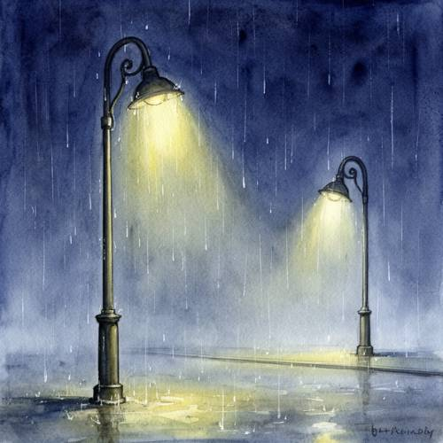
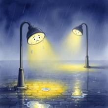

Attribute — In the watercolor painting style, a lonely street lamp lowered its hea
In the watercolor painting style, a lonely street lamp lowered its head sadly in the rainy night, and another street lamp in the distance was looking at it with concern.

Direct — one call, no iterationContinuum — Qwen3.8-27B + FLUX.2-dev
Judge — Direct
FAILAttribute - Expression — The street lamp in the foreground has its head angled downwards, which aligns with the description 'lowered its head'. However, as an inanimate object without facial features, it does not visually convey the emotion 'sadly'. Similarly, the street lamp in the distance does not have any visual characteristics to suggest it is feeling 'with concern'.
FAILAction - Non-contact Interaction — The image contains two street lamps. The second, more distant street lamp is oriented facing forward along the path, with its light cast downwards and in front of it. It is not turned or angled in a way that would suggest it is 'looking at' the street lamp in the foreground.
PASSStyle — The image is rendered in a style that strongly resembles a watercolor painting. This is evident in the blended color washes of the dark blue background, the soft diffusion of the yellow light, the visible texture, and the fluid appearance of the rain streaks.
PASSGrammar - Consistency — The image correctly depicts two entities that are both street lamps, consistent with the prompt's requirement for 'a lonely street lamp ... and another street lamp'. One lamp is positioned in the foreground and the other is in the distance.
Judge — Continuum
PASSAttribute - Expression — The street lamp in the foreground has a face with a downturned mouth and sad eyes. Water droplets are falling from its lamp shade, resembling tears, which visually represents the emotion 'sadly'. The street lamp in the distance also has a face with a downturned mouth, and its head is tilted, which can be interpreted as an expression of 'concern'.
PASSAction - Non-contact Interaction — The street lamp in the distance is physically angled towards the street lamp in the foreground, with its 'face' directed at it. This posture visually represents the non-contact interaction of one lamp 'looking at' the other.
PASSStyle — The image has the appearance of a watercolor painting. This is evident from the soft, blended colors, the visible texture resembling paper, and the way light and water are depicted with soft edges and washes, particularly in the background and on the wet cobblestone ground.
PASSGrammar - Consistency — The image contains two distinct street lamps. One is positioned in the foreground and is the main subject, while a second, similar street lamp is shown further away in the background, fulfilling the prompt's requirement for 'a lonely street lamp' and 'another street lamp'.
What the agent did
Thinking
The user is asking for a watercolor painting: on a rainy night, a lonely streetlamp droops its head sadly, and another distant streetlamp is gazing at it with concern. Personified streetlamps with expressions/moods. Let me try generating it with flux2-dev. Prompt description: a watercolor painting of a rainy night street, a streetlamp with a sad drooping face (the lamp head drooping, with a sad face on the lamp head), a distant streetlamp in the background with a concerned face gazing at it, rain streaks, puddles, soft watercolor wash, night scene. Let me craft a good prompt: "A watercolor painting, rainy night street scene. A personified streetlamp in the foreground, its lamp head bent low and drooping sadly, with a tiny sad face (furrowed brow, downturned mouth) on the lamp head, looking dejected. In the misty distance, a second streetlamp stands upright, its head tilted toward the first lamp, with a concerned face. Gentle watercolor rain streaks, soft washes of indigo and deep blue night sky, warm yellow light spilling from the lamps, wet cobblestone street with soft reflections, puddles, muted palette, soft edges, visible watercolor texture, emotional, gentle, storybook atmosphere." Size: something like 1024x1024, or landscape 1344x768? The harness controls the size... Actually it says "the harness controls size and seed." So I shouldn't set a seed; size — maybe it's okay to set width/height? "Do not set the seed. Size and seed are controlled by the harness." Hmm, it says the size is controlled by the harness, so I shouldn't set the width/height either. Just call generate_image with the prompt and model flux2-dev. After that, inspect, and if the face/expression is wrong, edit. Alright, let's begin.
Step 1 — `generate_image`
{
"prompt": "Watercolor painting, rainy night. In the foreground, a lonely personified street lamp on a wet cobblestone street, its lamp head bowed low and drooping sadly, with a small simple sad face (furrowed brows, downturned mouth) on the glass lamp head, a single tear of rain dripping. Far in the misty background, a second street lamp stands upright on the street, its lamp head tilted toward the sad lamp, with a small concerned worried face. Gentle diagonal watercolor rain streaks, soft indigo and deep blue night washes, warm yellow pools of light spilling from both lamps onto the wet ground, soft reflections in puddles, muted moody palette, soft bleeding edges, visible watercolor paper texture, tender emotional storybook mood.",
"model": "flux2-dev"
}
Result img_0

Thinking
This is a great result! Let's evaluate it against the prompt: 1. Watercolor painting style — yes, clearly has watercolor texture, soft washes. 2. Lonely streetlight droops its head sadly in the rain at night — yes, the streetlight in the foreground is drooping, with a sad face, raining down. 3. Another streetlight in the distance gazes with concern — yes, there's a streetlight in the background, its head tilted toward the first streetlight, with a small worried face. 4. Rainy night — yes, rain streaks, dark blue night. To confirm that the faces are clearly "sad" and "concerned," let's zoom in and verify the facial details. Let's try using inspect_region on both lamp faces.
Model
This is a promising first pass. Let me zoom in on both lamp faces to verify the sad and concerned expressions read clearly.
Both faces are very well rendered: - Foreground lamp: tilted downward, sad eyes, frowning mouth, tears falling — clearly sad, head lowered. ✓ - Distant lamp: tilted toward the foreground lamp, worried eyes and frown — a look of concern. ✓ Watercolor style ✓, rainy night ✓, lonely street lamp with head lowered and sad ✓, a distant street lamp with a look of concern ✓. This image meets all the requirements of the prompt. The composition is lovely, the mood is tender, the watercolor texture is good, and the puddle reflections add a sense of depth. There's a signature in the bottom right ("Anat Coab" or similar), but this is a harmless painterly signature, typical of a watercolor painting. No problem. I should mark this as the best and stop. No editing needed — it's already a great result. Mark img_0 as the best.
Model
Both expressions are rendered beautifully: the foreground lamp droops with downturned eyes, a frown, and falling tears, while the distant lamp is tilted toward it with a worried brow and mouth—a clear look of concern. The watercolor texture, rainy night, light pools, and puddle reflections all work. This fully matches the prompt, so no edits are needed.
Step 4 — `mark_best`
{
"image": "img_0",
"reason": "All prompt elements verified: watercolor style, rainy night, sad bowed street lamp with tearful sad face in foreground, distant street lamp with concerned face looking toward it."
}
Thinking
Done. The marked image is the final version, and I haven't performed any edits after the marking. Let me summarize.
Model
The watercolor is complete. It captures the whole scene you described: - **Lonely street lamp, head lowered in sadness** — the foreground lamp droops with a small sorrowful face (downturned brows and mouth) and teardrops falling from its light onto the wet cobblestones. - **Distant lamp, full of concern** — the second lamp in the misty background tilts its head toward the sad one, its little face showing worry. - **Rainy night** — gentle diagonal rain streaks, deep indigo watercolor washes, warm pools of lamplight, and soft reflections shimmering in puddles on the street. The soft bleeding edges and paper texture keep the tender, storybook watercolor mood throughout. The marked result is ready.